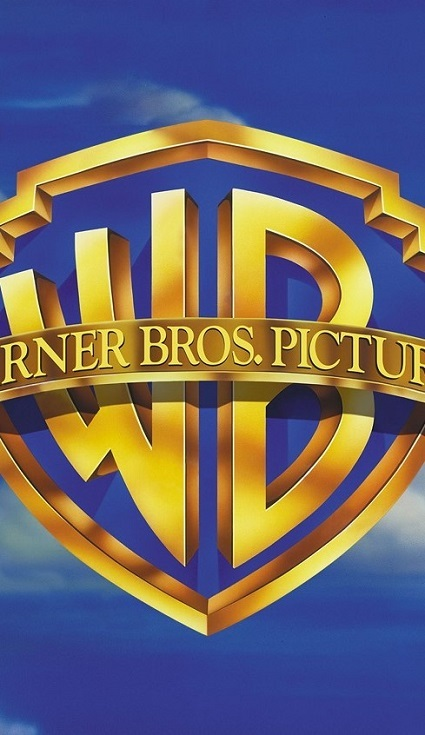
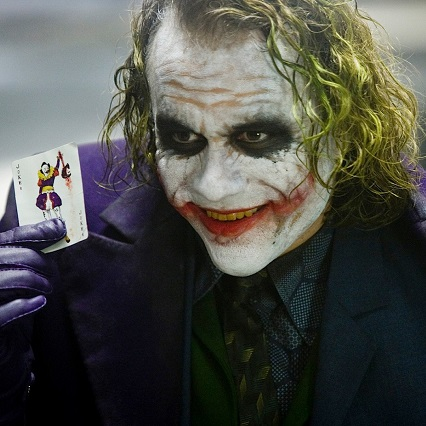
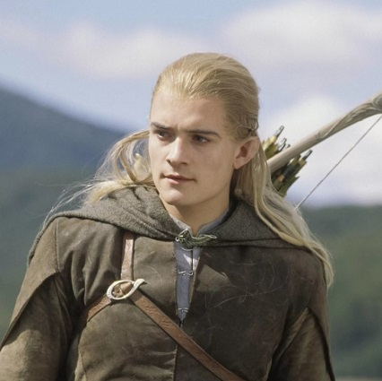
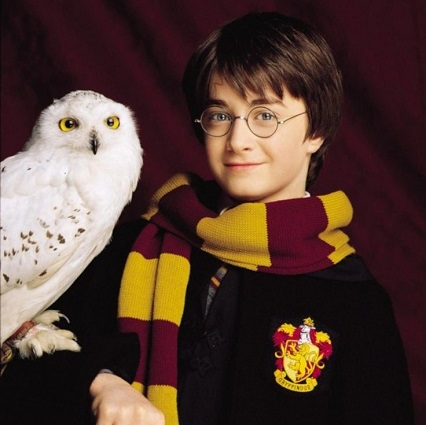
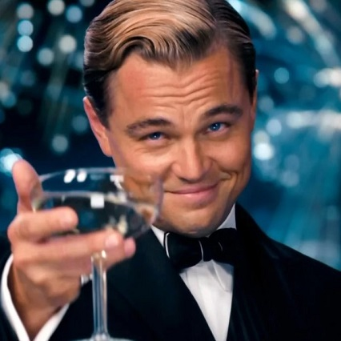

САМЫЕ ИЗВЕСТНЫЕ КИНОГЕРОИ WARNER BROS. PICTURES
Warner Bros. Pictures — один из крупнейших концернов по производству фильмов и телесериалов в США. Компания названа в честь четырёх братьев Уорнеров: Гарри, Альберта, Сэма и Джека Уорнера.
К началу Первой мировой войны братья начали заниматься производством собственных фильмов, и в 1918 году открыли студию Warner Bros. Studio, расположившуюся на Бульваре Сансет в Голливуде. Сэм и Джек Уорнеры занимались производством картин, в то время как Гарри и Альберт занимались финансами в Нью-Йорке. В 1923 году они формально объединились в корпорацию Warner Brothers Production, которая за все годы существования воспроизвела на свет множество легендарных фильмов, героев которых знает весь мир.
И вот некоторые из них:
Джокер
Леголас
Гарри Поттер
Джей Гэтсби

ДЖОКЕР
Джокер — циник, анархист и садист. Он ненавидит человечество и считает, что в глубине души все такие же негодяи, как он. Многие называют Джокера психом, однако если вглядеться поглубже, то это не совсем так. В его словах и действиях есть смысл, он прекрасно отдает себе отчёт в том, кто он и чего хочет. Его боятся, потому что он непредсказуем и опасен; у него нет правил, поэтому невозможно до конца просчитать его действия и понять его мотивы. Джокер определённо совершает преступления не ради самообогащения или власти; он совершает их, так как считает, что это весело. Когда он говорит, что у него нет цели, он немного лукавит, так как, доводя людей до отчаяния, он ставит под сомнения все их моральные принципы. Если вглядеться поглубже, то можно понять, что Джокер во многом прав. Власти города некомпетентны, т.к. позволяют процветать преступности в Готэме. Более того, они повязли в коррупции, что легко развязывает мафии руки. Возможно, ненависть Джокера направлена не на человечество как таковое, а на его пороки: жадность, эгоизм, продажность, лицемерие, трусость, - и его главными целями не являются уничтожение мира или его подчинение.

ЛЕГОЛАС
Леголас — один из главных персонажей трилогии «Властелин колец», эльфийский принц, сын Трандуила, короля эльфов Северного Лихолесья. В 3018 году Третьей Эпохи он прибыл в Ривенделл, где принял участие в совете. Позднее присоединился к Братству Кольца, где он был единственным представителем расы эльфов. За время путешествия он особенно сдружился с гномом Гимли. Острый глаз Леголаса и его мастерство в обращении с луком и стрелами оказали неоценимую помощь Братству. Также он неплохо управляет гребной лодкой и показывает отменные навыки верховой езды и управления лошадьми. После смерти Боромира и распада Братства Леголас и Гимли последовали за Арагорном и сопровождали его до окончания Войны Кольца. Путешествуя по Фангорну, они встретили Гэндальфа в белых одеждах, который убедил их сопровождать его в Эдорас. Там они присоединились к армии Рохана на время войны с Саруманом. Арагорн, Леголас и Гимли сражались вместе с рохиррим в битве у Хельмовой Пади. После сражения они сопровождали короля Теодена в Изенгард, и там Леголас находился среди тех, кто вёл переговоры с Саруманом. Вскоре после этого Леголас и Гимли, следуя за Арагорном, прошли Стезёй Мертвецов к Камню Эреха, чтобы привести войско призраков-клятвопреступников к Пеларгиру и приплыть в королевство Гондор от морских берегов, тем самым исполнив древнее пророчество. Леголас и Гимли были рядом, когда разразилась Битва на Пеленнорских Полях. В Гондоре Леголас впервые увидел море и услышал крики чаек, и с тех пор желание уплыть на Запад, в Валинор, не отпускало его. И он исполнил эту мечту после смерти Арагорна.

ГАРРИ ПОТТЕР
Гарри Поттер — главный герой Поттерианы, одноклассник и лучший друг Рона Уизли и Гермионы Грейнджер, член Золотого Трио. Самый знаменитый студент Хогвартса за последние сто лет. Первый волшебник, которому удалось противостоять смертельному проклятью «Авада Кедавра», благодаря чему он стал знаменитым и получил прозвище «Мальчик, Который Выжил». В начале повествования Гарри — одинокий, замкнутый ребёнок, который постоянно подвергается унижениям в семье и в школе. Гарри добр, серьёзно относится к любым человеческим отношениям, никогда не предаст близкого человека, с уважением относится ко взрослым, которые, конечно, это уважение заслужили.

ДЖЕЙ ГЕТСБИ
Джей происходит он из семьи бедных фермеров. С детства мальчика одолевают фантазии о будущем богатстве и величии. Джей одержим своими стремлениями и упорно карабкается к своей грандиозной мечте. Так он оказывается в блестящем доме семейства Фэй, где царит несравненная Дейзи. Дейзи Фэй становится для Гэтсби воплощением мечты, объектом идеализации. Она богата, красива, а самое главное — она «самая-самая», и это признано многими. Но Джей уходит на войну, а девушка выходит замуж за Тома Бьюкенена. Пять лет Дейзи ничего не слышит о Гэтсби, но он по-прежнему одержим ею. Он возвращается с войны и перебирается в Нью-Йорк. Воспользовавшись запретом и нажив состояние на контрабанде наркотиков, Гэтсби покупает особняк рядом с особняком Дейзи. Там он каждые выходные устраивает изысканные вечеринки, открытые для всех желающих, чтобы привлечь Дейзи в качестве гостя. Во время одной из таких вечеринок непринужденная беседа перерастает в конфронтацию между Дейзи, Гэтсби и Томом. Вечеринка заканчивается, и Дейзи увозит Гэтсби из Нью-Йорка на его машине. Но по дороге она сбивает их общую знакомую насмерть. В панике Дейзи уезжает с места происшествия. Гэтсби обещает ей, что возьмет вину на себя, если их когда-нибудь поймают. Том же рассказывает мужу погибшей девушки, Джорджу, что его супругу убила машина Гэтсби. Джордж идет в дом Гэтсби, где он убивает Гэтсби, прежде чем совершить самоубийство. Позже Гэтсби находят мертвым, плавающим в своем бассейне.